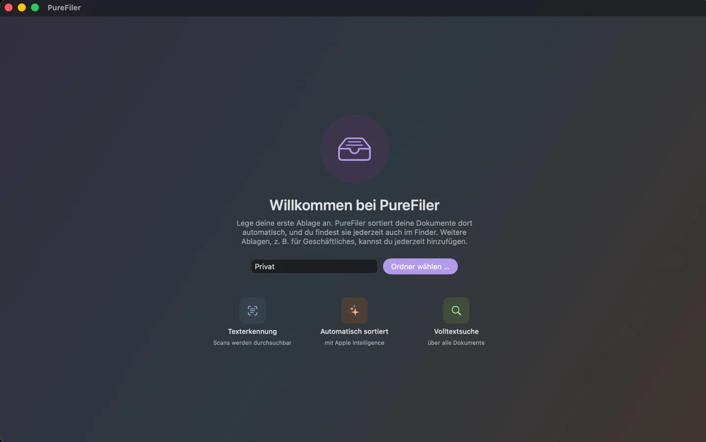

Texterkennung
Auch gescannte PDFs und Bilder werden durchsuchbar.
PureFiler erkennt, benennt und sortiert deine Dokumente automatisch. Durchsuchbar, übersichtlich und mit lokaler KI-Verarbeitung.
Für macOS · Ohne Abo · Dokumentenanalyse auf deinem Mac

Auch gescannte PDFs und Bilder werden durchsuchbar.
Dokumente automatisch erkennen, benennen und ablegen.
Mit Volltextsuche über deine Dokumente.
WIR HELFEN GERN
Schreib uns direkt oder schau in die häufigen Fragen.